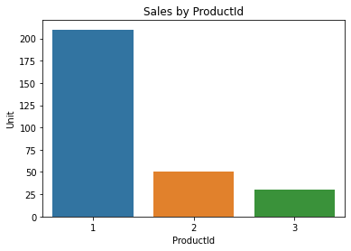
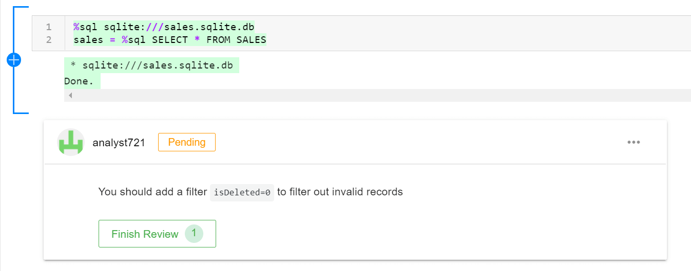
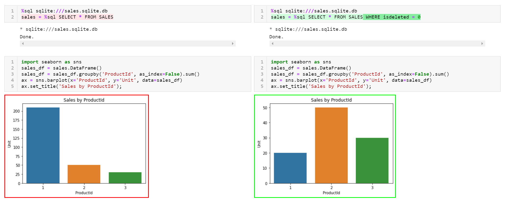
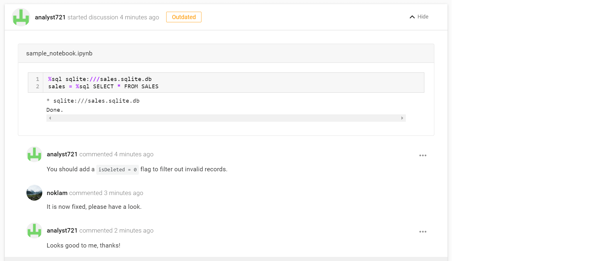

Jupyter Superpower - Extend SQL analysis with Python
python
reviewnb
sql
Making collboration with Notebook possible and share perfect SQL analysis with Notebook.
Author
noklam
Published
June 26, 2021
If you have ever written SQL queries to extract data from a database, chances are you are familiar with an IDE like the screenshot below. The IDE offers features like auto-completion, visualize the query output, display the table schema and the ER diagram. Whenever you need to write a query, this is your go-to tool. However, you may want to add Jupyter Notebook into your toolkit. It improves my productivity by complementing some missing features in IDE.
Dbeaver
Code
# !pip install ipython_sql%load_ext sql%config SqlMagic.displaycon =False%config SqlMagic.feedback =False# Download the file from https://github.com/cwoodruff/ChinookDatabase/blob/master/Scripts/Chinook_Sqlite.sqlite%sql sqlite:///sales.sqlite.dbfrom pathlib import PathDATA_DIR = Path('../_demo/sql_notebook')
%%sqlselect ProductId, Sum(Unit) from Sales group by ProductId;
ProductId
Sum(Unit)
1
210
2
50
3
30
Notebook as a self-contained report
As a data scientist/data analyst, you write SQL queries for ad-hoc analyses all the time. After getting the right data, you make nice-looking charts and put them in a PowerPoint and you are ready to present your findings. Unlike a well-defined ETL job, you are exploring the data and testing your hypotheses all the time. You make assumptions, which is often wrong but you only realized it after a few weeks. But all you got is a CSV that you cannot recall how it was generated in the first place.
Data is not stationary, why should your analysis be? I have seen many screenshots, fragmented scripts flying around in organizations. As a data scientist, I learned that you need to be cautious about what you heard. Don’t trust peoples’ words easily, verify the result! To achieve that, we need to know exactly how the data was extracted, what kind of assumptions have been made? Unfortunately, this information usually is not available. As a result, people are redoing the same analysis over and over. You will be surprised that this is very common in organizations. In fact, numbers often do not align because every department has its own definition for a given metric. It is not shared among the organization, and verbal communication is inaccurate and error-prone. It would be really nice if anyone in the organization can reproduce the same result with just a single click. Jupyter Notebook can achieve that reproducibility and keep your entire analysis (documentation, data, and code) in the same place.
Notebook as an extension of IDE
Writing SQL queries in a notebook gives you extra flexibility of a full programming language alongside SQL. For example:
Write complex processing logic that is not easy in pure SQL
Create visualizations directly from SQL results without exporting to an intermediate CSV
For instance, you can pipe your SQL query with pandas and then make a plot. It allows you to generate analysis with richer content. If you find bugs in your code, you can modify the code and re-run the analysis. This reduces the hustles to reproduce an analysis greatly. In contrast, if your analysis is reading data from an anonymous exported CSV, it is almost guaranteed that the definition of the data will be lost. No one will be able to reproduce the dataset.
You can make use of the ipython_sql library to make queries in a notebook. To do this, you need to use the magic function with the inline magic % or cell magic %%.
sales =%sql SELECT *from sales LIMIT 3sales
ProductId
Unit
IsDeleted
1
10
1
1
10
1
2
10
0
To make it fancier, you can even parameterize your query with variables. Tools like papermill allows you to parameterize your notebook. If you execute the notebook regularly with a scheduler, you can get a updated dashboard. To reference the python variable, the $ sign is used.
table ="sales"query =f"SELECT * from {table} LIMIT 3"sales =%sql $querysales
ProductId
Unit
IsDeleted
1
10
1
1
10
1
2
10
0
With a little bit of python code, you can make a nice plot to summarize your finding. You can even make an interactive plot if you want. This is a very powerful way to extend your analysis.
import seaborn as snssales =%sql SELECT * FROM SALESsales_df = sales.DataFrame()sales_df = sales_df.groupby('ProductId', as_index=False).sum()ax = sns.barplot(x='ProductId', y='Unit', data=sales_df)ax.set_title('Sales by ProductId');

Notebook as a collaboration tool
Jupyter Notebook is flexible and it fits extremely well with exploratory data analysis. To share to a non-coder, you can share the notebook or export it as an HTML file. They can read the report or any cached executed result. If they need to verify the data or add some extra plots, they can do it easily themselves.
It is true that Jupyter Notebook has an infamous reputation. It is not friendly to version control, it’s hard to collaborate with notebooks. Luckily, there are efforts that make collaboration in notebook a lot easier now.
Here what I did not show you is that the table has an isDeleted column. Some of the records are invalid and we should exclude them. In reality, this happens frequently when you are dealing with hundreds of tables that you are not familiar with. These tables are made for applications, transactions, and they do not have analytic in mind. Data Analytic is usually an afterthought. Therefore, you need to consult the SME or the maintainer of that tables. It takes many iterations to get the correct data that can be used to produce useful insight.
With ReviewNB, you can publish your result and invite some domain expert to review your analysis. This is where notebook shine, this kind of workflow is not possible with just the SQL script or a screenshot of your finding. The notebook itself is a useful documentation and collaboration tool.
Step 1 - Review PR online

Step1
You can view your notebook and add comments on a particular cell on ReviewNB. This lowers the technical barrier as your analysts do not have to understand Git. He can review changes and make comments on the web without the need to pull code at all. As soon as your analyst makes a suggestion, you can make changes.
Step 2 - Review Changes

Step2
Once you have made changes to the notebook, you can review it side by side. This is very trivial to do it in your local machine. Without ReviewNB, you have to pull both notebooks separately. As Git tracks line-level changes, you can’t really read the changes as it consists of a lot of confusing noise. It would also be impossible to view changes about the chart with git.
Step 3 - Resolve Discussion

Step3
Once the changes are reviewed, you can resolve the discussion and share your insight with the team. You can publish the notebook to internal sharing platform like knowledge-repo to organize the analysis.
I hope this convince you that Notebook is a good choice for adhoc analytics. It is possible to collaborate with notebook with proper software in place. Regarless if you use notebook or not, you should try your best to document the process. Let’s make more reproducible analyses!
")